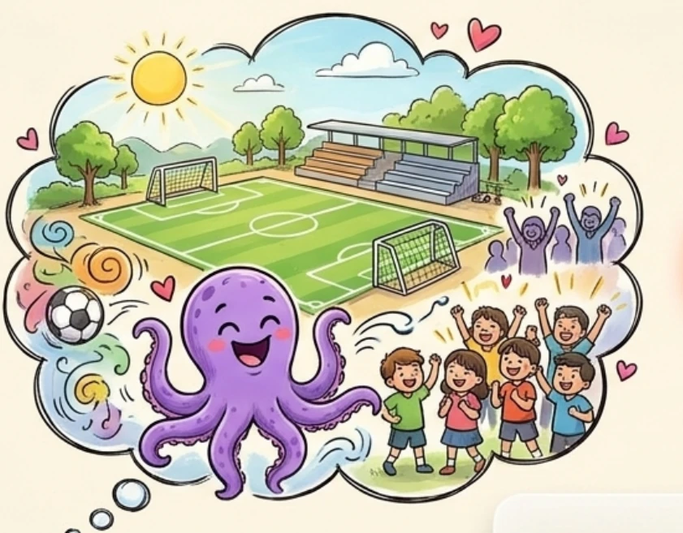
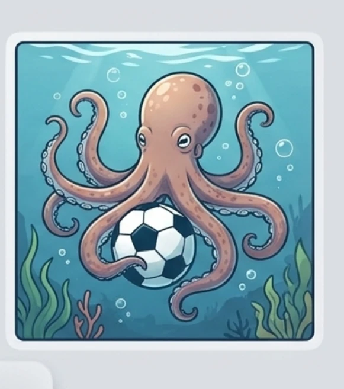
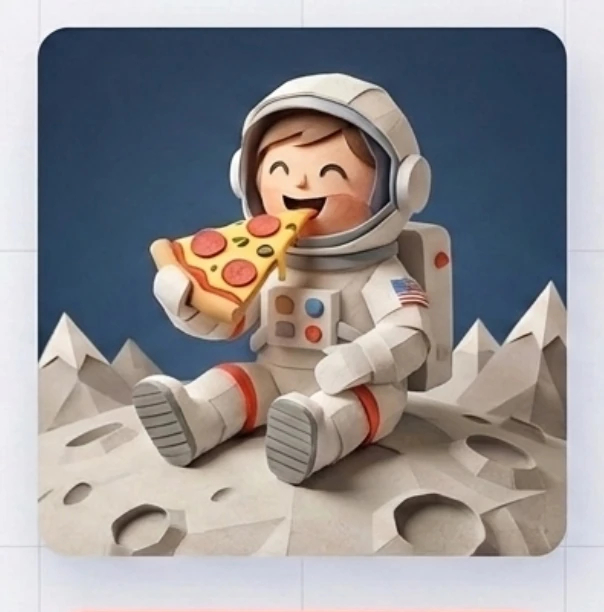

용산청소년센터 · 1주차
내가 상상한 걸
AI가 만들어 주네?
상상하고 → 말하고 → 만들고 → 고쳐 보기
내가 생각한 장면을 말로 설명하고
AI가 어떻게 그림으로 만드는지 알아봅니다.
먼저 이야기해요
AI를 사용해 본 적 있나요?
생활 속 AI
사실 이미 만나고 있었을지도 몰라요
이 중에서 해본 것이 있나요?
AI란?
AI(인공지능)
사람이 하는 여러 가지 일을
컴퓨터가 할 수 있도록 만든 기술
오늘 만날 AI
새로운 내용을 만들어 내요
질문하면 → 답을 만들고
부탁하면 → 이야기를 만들고
설명하면 → 그림도 만들어요
이렇게 새 내용을 만드는 AI가 생성형 AI예요.
오늘 사용할 AI
Gemini와 함께해요
“축구하는 문어를 그려줘”라고 하면
어떤 그림이 나올까요?
지금은 먼저 상상해 봐요.
꼭 기억해요
AI는 내 머릿속을 볼 수 없어요.
원하는 장면을 말로 알려 줘야 해요.
내가 생각한 축구하는 문어와 친구가 생각한 문어는 같을까요?
오늘의 새 말
프롬프트
AI에게 무엇을 해 달라고 알려 주는 말
프롬프트(Prompt): AI에게 내가 원하는 것을 알려주는 말이나 글
질문도, 부탁도, 설명도 프롬프트가 될 수 있어요.
첫 번째 실험 · 예상
“축구하는 문어”를 상상해 봐요
잠깐 눈을 감고 내 그림을 떠올려 봐요.
그림을 만들기 전
3초 안전 점검
- O내 정보 없이 그림을 설명해요.X이름·학교·비밀번호를 넣어요.
- O친구를 존중하는 그림을 만들어요.X친구를 놀리거나 얼굴을 허락 없이 써요.
- OAI가 만든 그림이라고 알려 줘요.X가짜 그림을 진짜 사진처럼 속여요.
O는 해요, X는 멈춰요. 헷갈리면 선생님께 물어봐요.
현장 Gemini 시연 ①
첫 그림을 만들어 볼게요
축구하는 문어를 그려줘.
지금 Gemini에서 직접 생성합니다
생성되는 동안 내가 예상한 그림을 떠올려요.
이름·학교·비밀번호는 입력하지 않아요.
첫 번째 결과 · 관찰
내 생각과 같았을까?
방금 만든 그림을 보며 말해요
첫 번째 결과 · 구분
내가 말한 것? AI가 만든 것?
AI는 말한 것을 바탕으로 그림을 완성해요. 말하지 않은 부분까지 내 생각 그대로 만들지는 못해요.
미리 준비한 비교 예시 · 현장 결과와는 달라요
어디가 달랐나요?
“축구하는 문어를 그려 줘.”라고만 말하면 어떨까요?


장소와 모습은 AI가 다르게 채울 수도 있어요.
조건 더하기
그림을 설명하는 다섯 가지
카드를 누르면 어떤 말을 더할지 볼 수 있어요.
프롬프트 비교
어느 쪽이 더 자세히 떠오르나요?
장소·행동·느낌을 더하면 원하는 그림에 가까워져요.
현장 Gemini 시연 ②
더 자세히 말하면 어떨까요?
보라색 문어가 초등학교 운동장에서 축구를 하고 있어. 골을 넣고 여덟 개의 팔을 흔들며 신나 하는 밝은 만화로 그려줘.
지금 Gemini에서 다시 생성합니다
이번에는 어떤 모습이 나올지 먼저 예상해요.
두 결과 · 비교
두 그림을 비교해 봅시다
설명하는 방법에 따라 결과가 달라질 수 있어요. 그래도 언제나 상상한 그대로 나오지는 않아요.
쉬는 시간
10분 쉬는 시간
잠시 화면에서 눈을 떼어요.
두 번째 실험 · 예상
이번에는 하나만 바꿔볼까?
무엇이 바뀌고, 무엇이 남을까요?
현장 Gemini 시연 ③
밤으로 바꿔 달라고 해 볼게요
문어의 보라색과 축구하는 모습은 그대로 두고, 낮이었던 운동장 배경을 밤으로 바꿔줘.
기존 문어 대화에서 직접 수정합니다
수정 결과 · 관찰
밤만 바뀌었나요?
바뀌라고 한 것
낮 → 밤
말하지 않았는데 달라진 것
문어 · 공 · 자세 · 구도를 살펴봐요
한 가지만 부탁해도 다른 부분이 달라질 수 있어요.
내 그림 수정하기
이번에는 내가 다시 요청해요
나는 __________을 바꾸고 싶어.
“________은 그대로 두고,
________을 ________으로 바꿔줘.”
남길 것과 바꿀 것을 함께 알려줘요.
내 결과 · 비교
처음 그림과 수정한 그림을 비교해요
- 바꾸라고 한 것이 바뀌었나요?
- 남겨 달라고 한 것은 남았나요?
- 말하지 않은 부분도 달라졌나요?
- 결과가 마음에 드나요?
말 하나 바꾸기 실험
어떤 그림이 될까요?
바꾼 말과 달라진 그림을 함께 살펴보세요.
짝 활동 · 프롬프트를 맞혀라!
이 그림은 어떻게 설명할까요?

짝과 한 문장을 만든 뒤 카드를 눌러 예시를 확인해요.
미션 1
세상에 아직 없는 장면을 만들어 보자!
- 1 머릿속으로 상상해요.
- 2 한 문장으로 설명해요.
- 3 Gemini에게 그림을 부탁해요.
생각이 안 나면: 구름 위 · 바닷속 · 100년 뒤 · 우주에서
나만의 상상
이번에는 내가 만든다
누가? __________
어디서? __________
무엇을? __________
어떤 모습? __________
어떤 느낌? __________
나만의 그림 · 생성과 관찰
Gemini에 내 프롬프트를 입력해요
- 내가 원한 것이 들어갔나요?
- 빠진 것은 없나요?
- 말하지 않은 것이 생겼나요?
- 마음에 들지 않는 부분은?
그림이 나오면
만약 상상하던 그림이 아니라면
“AI야, 그게 아니야!”
내가 상상한 것과 다른 부분을 찾아보세요.
나만의 그림 · 다시 수정
한 번 더 고쳐보자
처음부터 다시 쓰지 않아도 돼요. 한 가지씩 고쳐 보고 처음 결과와 비교해요.
AI 그림 안전 약속
재미있어도 이것은 하지 않아요
O 내 정보 없이, 서로 존중하는 그림을 만들어요.
- 친구·선생님 얼굴로 이상한 합성 그림 만들기
- 유명인이 하지 않은 일을 한 것처럼 꾸미기
- 다른 사람을 놀리거나 괴롭히는 그림 만들기
- 잔인하거나 성적인 그림 만들기
- 이름·학교·전화번호·비밀번호 입력하기
AI로 할 수 있어도 해도 되는 것은 아니에요.
오늘 우리가 발견한 것
Gemini로 그림을 만들며 무엇을 발견했나요?
상상하고 → 말하고 → 만들고 → 고쳤다!
다음 시간에는?
그림 말고 AI와 계속 대화하면?
내가 말하고 선택할 때마다
다음 이야기도 달라질까요?
다음 주: AI랑 대화하니까 내가 생각지도 못한 일이 벌어지네?
오늘 수업 마무리
한 줄 후기를 남겨 주세요!
QR로 후기 작성 화면을 열어요.
후기 작성 화면 열기 →
- 1AI에게 처음 어떤 그림을 만들어 달라고 말했나요?
- 2AI가 만든 그림에서 내 생각과 달랐던 부분은 무엇인가요?
- 3그 부분을 고치려고 AI에게 어떤 말을 했나요?
- 4오늘 수업은 어땠나요? 5단계 중 하나 선택
- 5가장 재미있었던 것이나 다음 시간에 더 해보고 싶은 것을 써 주세요.